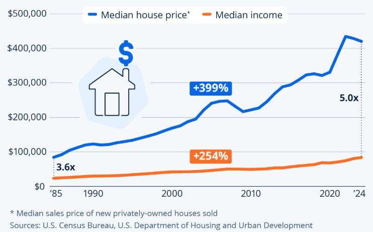

A few charts that I regularly think about. They are either illustrative of the kinds of things I think about, or were impactful in my way of thinking. A few of them are simply fantastic information-dense charts that I appreciate.



Planned
- Progress acceleration
- Radicalization (political parties)
- % of consultants